Hi there 👋
I am a first year Ph.D. student at the Human-Computer Interaction Institute in the School of Computer Science at Carnegie Mellon University, advised by Nik Martelaro. I recently graduated from HKUST with a Bachelor's degree in Computer Science, advised by Xiaojuan Ma and Kwang-Ting Cheng.
Research Interests
My research interest is in Human-Machine Co-Design by (1) building novel creativity support tools infused with machine intelligence and (2) investigating dynamics on how said tools augment design processes. I am also broadly interested in the intersection of Human Creativity + Machine Intelligence, with some backgrounds in Human-Computer Interaction, Computer Vision, AR/VR, and Visualization.
Publications
- 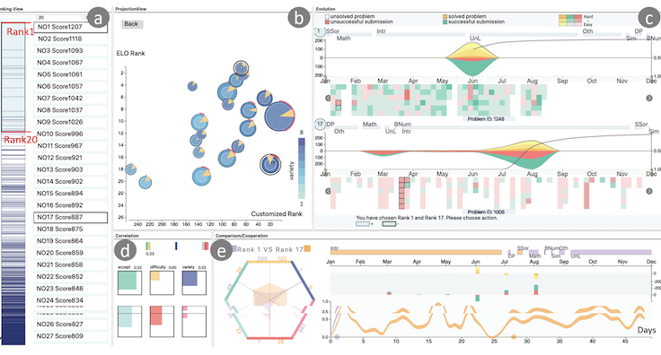
- SeqDynamics: Visual Analytics for Evaluating Online Problem-solving Dynamics
- Meng Xia, Min Xu, Chuan-en Lin, Ta Ying Cheng, Huamin Qu, Xiaojuan Ma
- Eurographics Conference on Visualization (EuroVis), 2020
- 📄 Paper🎬 Video
- 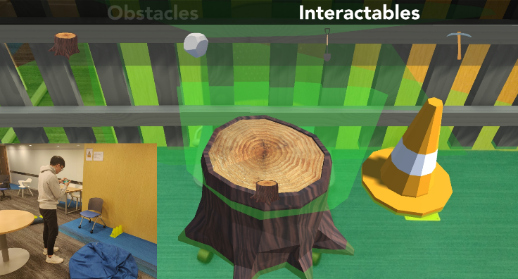
- ARchitect: Building Interactive Virtual Experiences from Physical Affordances by Bringing Human-in-the-Loop
- Chuan-en Lin*, Ta Ying Cheng*, Xiaojuan Ma
(* = equal contribution) - ACM Conference on Human Factors in Computing Systems (CHI), 2020
- 🏠 Project Page📄 Paper🎬 Video
- 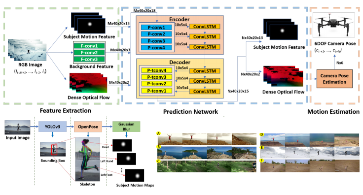
- Learning to Film from Professional Human Motion Videos
- Chong Huang, Chuan-en Lin, Zhenyu Yang, Yan Kong, Peng Chen, Xin Yang, Kwang-Ting Cheng
- IEEE Conference on Computer Vision and Pattern Recognition (CVPR), 2019
- 📄 Paper🎬 Video
Projects
- 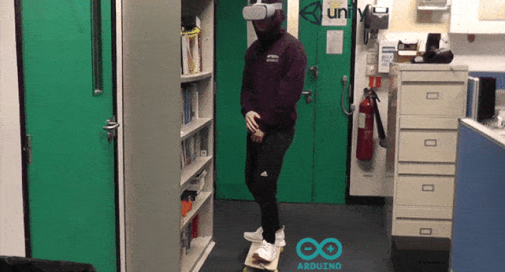
- Skateboard VR
- VR skateboarding game built with Unity controlled by a physical skateboard controller (Arduino, gyroscope, pressure sensor, Bluetooth).
- 🎪 Demo💻 Code
- 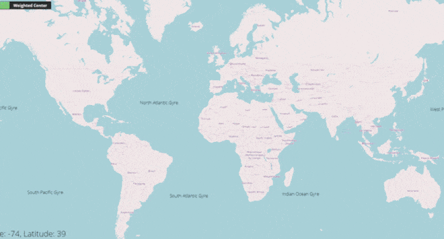
- OceanViz
- Understand and predict where your trash flows in the oceans visualized with D3.js and OpenLayers.
- 🎪 Demo💻 Code
- 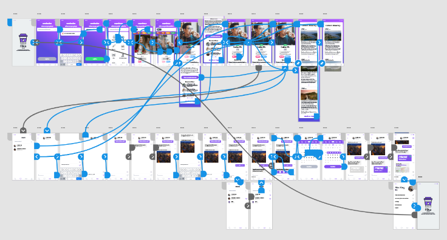
- Fika
- Facilitate interpersonal connections for a more meaningful travel experience (app).
- 🎪 Demo📊 Presentation
- leARn
- Interactive, programmable, augmented reality cube for dynamic learning experiences.
- 🎪 Demo💻 Code
- 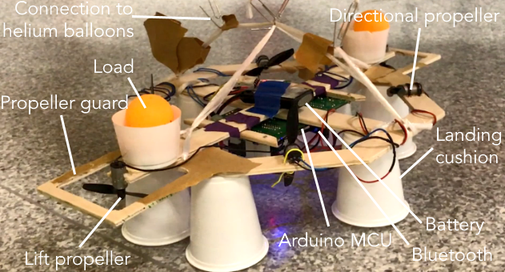
- Airship
- Helium-powered airship controlled by smartphone (Arduino, motor propellers, Bluetooth)
- 🎪 Demo
- 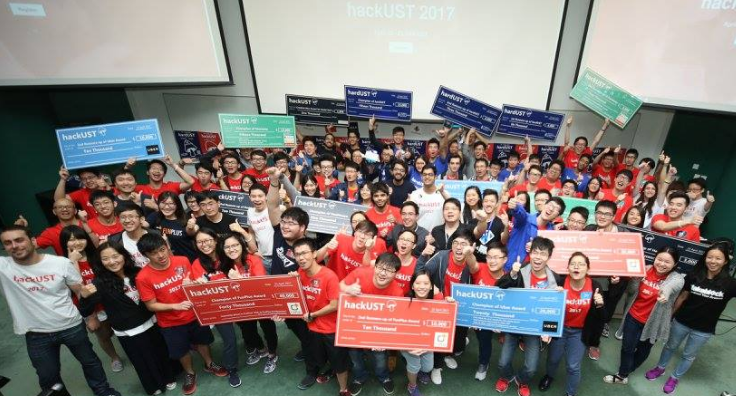
- hackUST 2017
- Co-organized the largest hackathon in Asia with over 800 participants.
- 🌐 Website📷 Photos🎬 Video (Teaser 1)🎬 Video (Teaser 2)

- ibphysics.org
- Physics revision site for International Baccalaureate students.
-
📈 2M+ website visits and 20K+ native app downloads with 4.9 average rating. - 🌐 Website📱 App
Articles
- 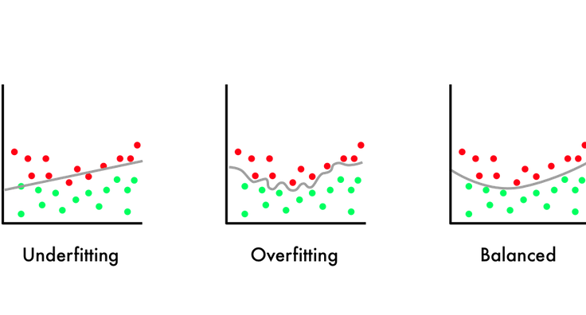
- 8 Simple Techniques to Prevent Overfitting
- A toolbox of methods to battle overfitting in Machine Learning.
⭐ Featured by Medium in Machine Learning and Data Science. - 📝 Article
- 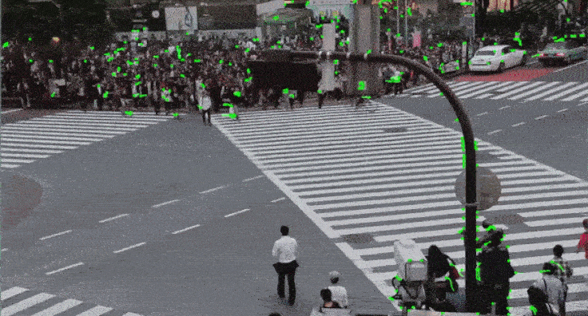
- Introduction to Motion Estimation with Optical Flow
- Implement sparse and dense optical flow and learn about recent approaches using deep learning.
-
🙌 Collaboration with Nanonets - 📝 Article💻 Code
- 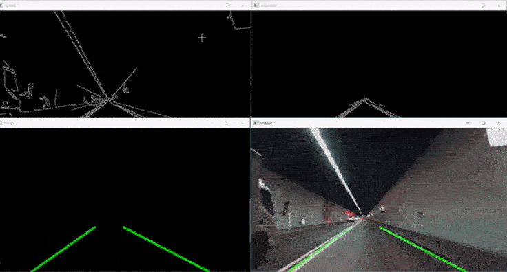
- Tutorial: Build a lane detector
- Build a pipeline for tracking road lanes with Hough Transform and SCNN.
⭐ Featured by Medium in Machine Learning. - 📝 Article💻 Code
- 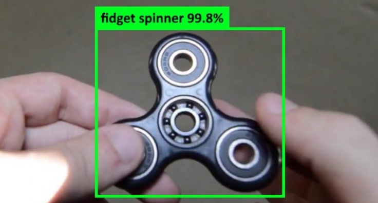
- Tutorial: Build your custom real-time object classifier
- Deploy a scraper, label with Mechanical Turk, and train your object detection model with YOLOv3.
-
⭐ Featured by Medium in Data Science and Machine Learning. - 📝 Article💻 Code (Scraping)💻 Code (Labeling)💻 Code (Training)
Talks
- 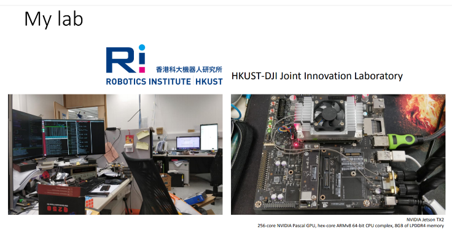
- Autonomous Drone Real-Time Object Identification and Tracking
- I gave a 30-min talk in KAIST, Korea for the 5th ASPIRE UGRA.
- 📊 Presentation
Volunteering
- I served as the Engineering Student Ambassador for HKUST.
- I served as an organizer for Fishackathon Hong Kong 2018, hackUST 2017, Startups x Investors 2016, TEDxHKUST 2016, and my highschool's first hackathon.
- I am a young member of Engineers Without Borders (Hong Kong).
- I am a student member of ACM and IEEE.